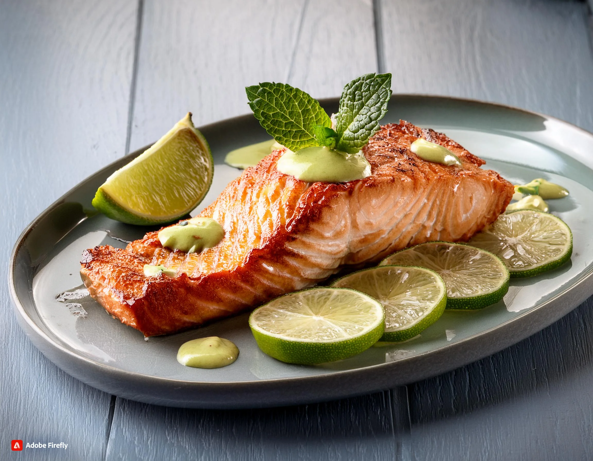
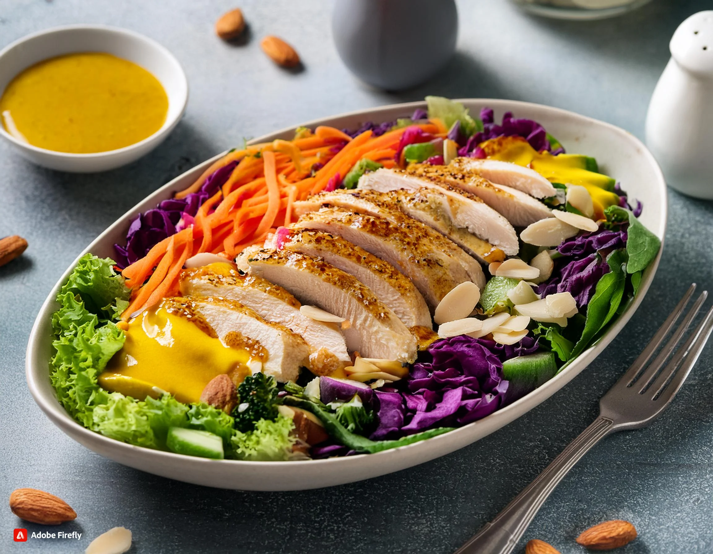

Carnes
Descubre recetas deliciosas y fáciles de preparar para tus platillos con carnes.
Inicio
Recetas Guardadas
Nosotros
Recetas Con Carnes

Salmón asado con lima fresca y salsa de jengibre
Gran Hamburguesa de carne de res Wagyu
Albóndigas de pollo con queso crema
Pasta cremosa de pollo y tocino
Arroz con pollo y verduras en una sola olla
Filete de Carne de Wagyu con Papas Fritas

Ensalada de Pollo Arcoíris con Almendras y Miel